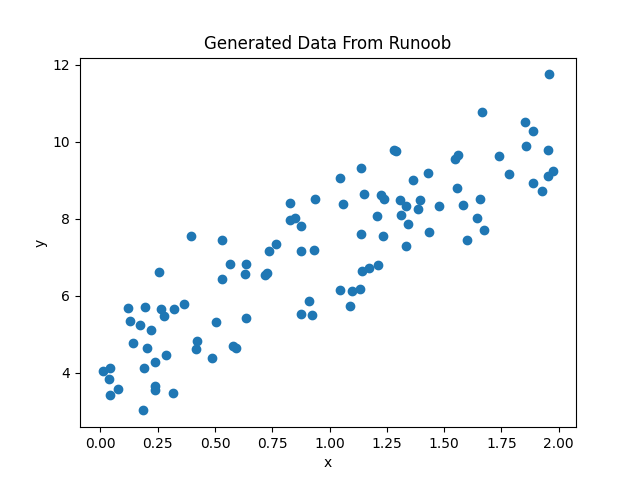
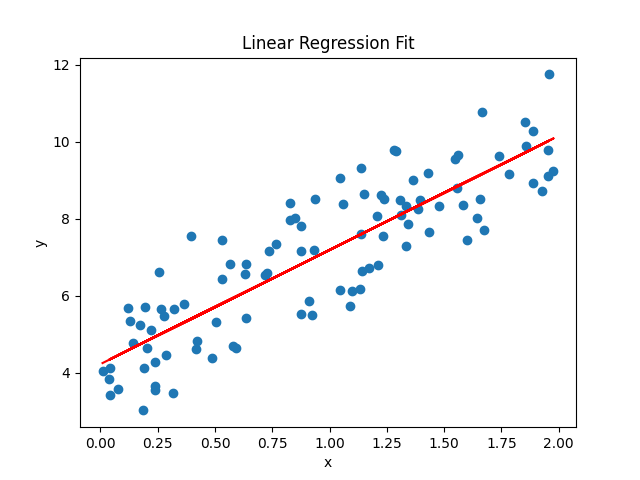
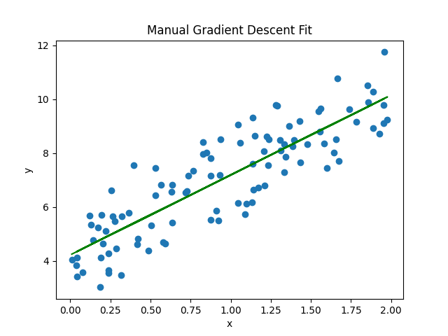

線形回帰 (Linear Regression)
線形回帰（Linear Regression）は、機械学習の中で最も基本的かつ広く応用されているアルゴリズムの一つです。
線形回帰 (Linear Regression) は、連続値を予測するための最も基本的な機械学習アルゴリズムであり、目的変数がyと特徴変数xの間に線形関係があると仮定し、この関係を表す最適な近似直線を見つけようとします。
y = w * x + b
ただし：
yは予測値xは特徴変数wは重み (傾き)bはバイアス (切片)
線形回帰の目的は、最適なwとbを見つけて、予測値yと実測値との誤差を最小にすることです。一般的に使われる誤差関数は平均二乗誤差 (MSE) です：
MSE = 1/n * Σ(y_i - y_pred_i)^2
ただし：
- y_i は実測値です。
- y_pred_i は予測値です。
- n はデータ点の数です。
私たちの目標は、 w と b を調整して MSE を最小化することです。
線形回帰をどう解くか？
1、最小二乗法
最小二乗法は線形回帰を解くための一般的な方法であり、以下の方程式を解くことで最適な ( w ) と ( b ) を見つけます。
最小二乗法の目的は残差平方和（RSS）を最小化することであり、その式は次の通りです：
\[ \text{RSS} = \sum_{i=1}^n (y_i - \hat{y}_i)^2 \]
ただし：
\( y_i \)は実測値です。\( \hat{y}_i \)は予測値で、線形回帰モデル\( \hat{y}_i = w x_i + b \)によって計算されます。
RSS を最小化することで、以下の正規方程式が得られます：
\[ \begin{cases} w \sum_{i=1}^n x_i^2 + b \sum_{i=1}^n x_i = \sum_{i=1}^n x_i y_i \\ w \sum_{i=1}^n x_i + b n = \sum_{i=1}^n y_i \end{cases} \]
行列形式
正規方程式を行列形式で書くと：
\[ \begin{bmatrix} \sum_{i=1}^n x_i^2 & \sum_{i=1}^n x_i \\ \sum_{i=1}^n x_i & n \end{bmatrix} \begin{bmatrix} w \\ b \end{bmatrix} = \begin{bmatrix} \sum_{i=1}^n x_i y_i \\ \sum_{i=1}^n y_i \end{bmatrix} \]
解法
上記の行列方程式を解くことで、最適な\( w \)と\( b \)：
\[ \begin{bmatrix} w \\ b \end{bmatrix} = \begin{bmatrix} \sum_{i=1}^n x_i^2 & \sum_{i=1}^n x_i \\ \sum_{i=1}^n x_i & n \end{bmatrix}^{-1} \begin{bmatrix} \sum_{i=1}^n x_i y_i \\ \sum_{i=1}^n y_i \end{bmatrix} \]
2、勾配降下法
勾配降下法の目的は損失関数\( J(w, b) \) を最小化することです。線形回帰の問題では、通常、損失関数として平均二乗誤差（MSE）を使用します：
\[ J(w, b) = \frac{1}{2m} \sum_{i=1}^m (y_i - \hat{y}_i)^2 \]
ただし：
\( m \)はサンプル数です。\( y_i \)は実測値です。\( \hat{y}_i \)は予測値で、線形回帰モデル\( \hat{y}_i = w x_i + b \)によって計算されます。
勾配は、損失関数のパラメータに関する偏微分であり、損失関数がパラメータ空間内で変化する方向を表します。線形回帰の場合、勾配は次のように計算されます：
\[ \frac{\partial J}{\partial w} = -\frac{1}{m} \sum_{i=1}^m x_i (y_i - \hat{y}_i) \]
\[ \frac{\partial J}{\partial b} = -\frac{1}{m} \sum_{i=1}^m (y_i - \hat{y}_i) \]
パラメータ更新規則
勾配降下法は以下の規則でパラメータを更新します\( w \)と\( b \)：
\[ w := w - \alpha \frac{\partial J}{\partial w} \]
\[ b := b - \alpha \frac{\partial J}{\partial b} \]
ただし：
\( \alpha \)は学習率（learning rate）であり、各更新のステップ幅を制御します。
勾配降下法の手順
- パラメータの初期化：初期化する
\( w \)と\( b \)の値（通常は 0 またはランダムな値に設定）。 - 損失関数の計算：現在のパラメータにおける損失関数の値を計算する
\( J(w, b) \)。 - 勾配の計算：損失関数の
\( w \)と\( b \)に関する偏微分を計算する。 - パラメータの更新：勾配に基づいて更新する
\( w \)と\( b \)。 - 繰り返し反復：損失関数が収束するか最大反復回数に達するまで、手順 2 から 4 を繰り返します。
Pythonを使って線形回帰を実装する
次に、簡単な例を使って、Python で線形回帰を実装する方法を説明します。
1、必要なライブラリをインポートする
例
import matplotlib.pyplot as plt
from sklearn.linear_model import LinearRegression
2、シミュレーションデータを生成する
例
import matplotlib.pyplot as plt
from sklearn.linear_model import LinearRegression
# ランダムなデータを生成する
np.random.seed(0)
x = 2 * np.random.rand(100, 1)
y = 4 + 3 * x + np.random.randn(100, 1)
# データを可視化する
plt.scatter(x, y)
plt.xlabel('x')
plt.ylabel('y')
plt.title('Generated Data From サンプル')
plt.show()
表示は次のようになります：

3、Scikit-learn を使用して線形回帰を行う
例
import matplotlib.pyplot as plt
from sklearn.linear_model import LinearRegression
# ランダムなデータを生成する
np.random.seed(0)
x = 2 * np.random.rand(100, 1)
y = 4 + 3 * x + np.random.randn(100, 1)
# 線形回帰モデルを作成する
model = LinearRegression()
# モデルを適合させる
model.fit(x, y)
# モデルのパラメータを出力する
print(f"傾き (w): {model.coef_)
print(f"切片 (b): {model.intercept_)
# 予測
y_pred = model.predict(x)
# 適合結果を可視化する
plt.scatter(x, y)
plt.plot(x, y_pred, color='red')
plt.xlabel('x')
plt.ylabel('y')
plt.title('Linear Regression Fit')
plt.show()
出力結果：
斜率 (w): 2.968467510701019 截距 (b): 4.222151077447231
表示は次のようになります：

私たちはscore()メソッドを使用してモデルの性能を評価し、R^2 値を返すことができます。
例
from sklearn.linear_model import LinearRegression
# ランダムなデータを生成する
np.random.seed(0)
x = 2 * np.random.rand(100, 1)
y = 4 + 3 * x + np.random.randn(100, 1)
# 線形回帰モデルを作成する
model = LinearRegression()
# モデルを適合させる
model.fit(x, y)
# モデルのスコアを計算する
score = model.score(x, y)
print("モデルスコア:", score)
出力結果は次の通りです：
模型得分: 0.7469629925504755
4、勾配降下法を手動で実装する
例
import matplotlib.pyplot as plt
from sklearn.linear_model import LinearRegression
# ランダムなデータを生成する
np.random.seed(0)
x = 2 * np.random.rand(100, 1)
y = 4 + 3 * x + np.random.randn(100, 1)
# パラメータを初期化する
w = 0
b = 0
learning_rate = 0.1
n_iterations = 1000
# 勾配降下
for i in range(n_iterations):
y_pred = w * x + b
dw = -(2/len(x)) * np.sum(x * (y - y_pred))
db = -(2/len(x)) * np.sum(y - y_pred)
w = w - learning_rate * dw
b = b - learning_rate * db
# 最終的なパラメータを出力する
print(f"手動実装による傾き (w): {w}")
print(f"手動実装による切片 (b): {b}")
# 手動実装による適合結果を可視化する
y_pred_manual = w * x + b
plt.scatter(x, y)
plt.plot(x, y_pred_manual, color='green')
plt.xlabel('x')
plt.ylabel('y')
plt.title('Manual Gradient Descent Fit')
plt.show()
出力結果：
手动实现的斜率 (w): 2.968467510701028 手动实现的截距 (b): 4.222151077447219
表示は次のようになります：

その他の拡張